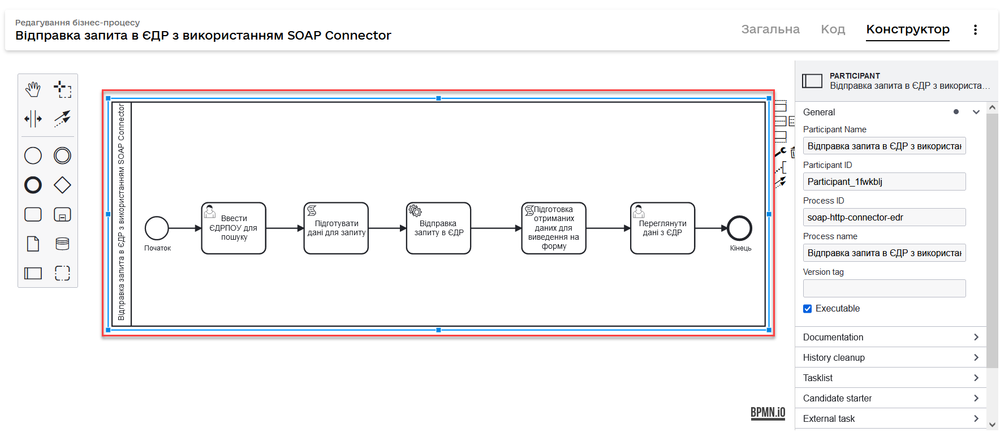
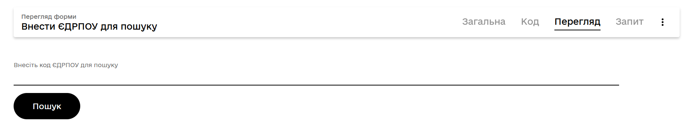
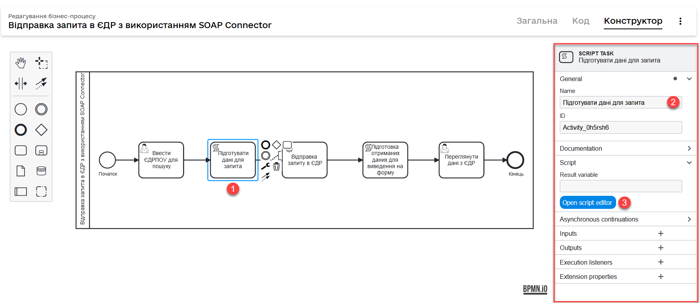
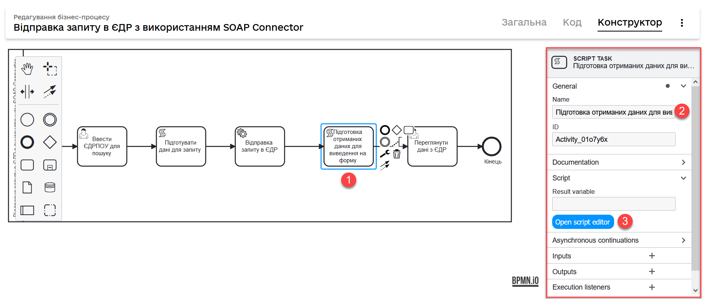

SOAP-based integration with other registries
- 1. Overview
- 2. Installing standard integration connectors
- 3. General integration SOAP HTTP connector
- 3.1. Configuring the connector
- 3.2. An example of querying the EDR service as part of the business process
- 3.2.1. A user task for entering data to search another registry
- 3.2.2. A script for making requests through the SOAP connector
- 3.2.3. A service task for sending a search query to another registry
- 3.2.4. A script for outputting data to the user’s UI form
- 3.2.5. A user task for passing data to the UI form
1. Overview
Integration with registries outside the Platform is possible through a secure exchange gateway (SEG).
The goal of using SEG is to provide a secure interface for electronic interactions between various state systems. Once SEG is deployed within the Platform as a service, it enables receiving information from external systems using its own resources.
To call external services, you can use the Platform’s standard integration connector that enables communication with external services via the SOAP protocol over the SEG interface.
The SOAP connector is used in business processes to receive data from registries outside the Platform.
| The SOAP connector can only be used with mock servers that simulate a live connection. |
2. Installing standard integration connectors
Connectors are configured in the Camunda Modeler application. Before you start, ensure all prerequisites described in the Installing a catalog of standard extensions to business processes section are fulfilled.
3. General integration SOAP HTTP connector
You can use the SOAP http connector extension to call any external SOAP service. This connector is configured using the SOAP http connector template (soapHttpConnector.json).
|
3.1. Configuring the connector
The connector is configured via an extension template for the service task of the business process.
-
Open the business process modeling interface.
-
Create a Service Task.
-
In the panel on the right, click
Select, then select the SOAP http connector from the list. Configure the template:-
Name: Specify the task name — for example,
Search by registry subject. -
Url: Specify the resource address — for example,
https://trembita-edr-registry-mock.apps.envone.dev.registry.eua.gov.ua/mockEDRService. -
Headers: Specify the request headers — for example,
${requestHeaders}. -
Payload: Provide the request body — for example, `${requestPayload}. -
Result variable: Specify the variable to store the service response — for example,
edrResponseBody.
-
<soap11env:Envelope xmlns:soap11env="http://schemas.xmlsoap.org/soap/envelope/" xmlns:tns="http://nais.gov.ua/api/sevdeir/EDR" xmlns:xroad="http://x-road.eu/xsd/xroad.xsd" xmlns:id="http://x-road.eu/xsd/identifiers">
<soap11env:Header>
...
</soap11env:Header>
<soap11env:Body>
<tns:SearchSubjectsResponse>
<tns:SubjectList>
<tns:SubjectInfo>
<tns:state>1</tns:state>
<tns:state_text>registered</tns:state_text>
<tns:name>Sydorenko Vasyl Leonidovych</tns:name>
<tns:url>http://zqedr-api.nais.gov.ua/1.0/subjects/2222</tns:url>
<tns:code>2222</tns:code>
<tns:id>2222</tns:id>
</tns:SubjectInfo>
</tns:SubjectList>
</tns:SearchSubjectsResponse>
</soap11env:Body>
</soap11env:Envelope>| The response from a service returns in the form of a string — that is, a String type object in XML format. |
You can further use the response in the script for outputting data to the UI form.
3.2. An example of querying the EDR service as part of the business process
Let’s consider an example of using the integration connector in a business process that interacts with the EDR SOAP service. In our case, it searches for information about officers by their EDRPOU code (the edrpou attribute).
|
Download the following business process and UI form examples for reference:
|
-
Create a business process and add a pool to the modeling canvas.

-
Create a start task to initiate the process.
To use the
initiatorvariable in the business process, you need to define it in the Start initiator field of the start event.
3.2.1. A user task for entering data to search another registry
Next, model the User Task, select the User Form template, and configure it.
-
Specify the task name — for example,
Enter EDRPOU to search by. -
In the ID field, enter the task ID (
activity_id). You can use it in the business process according to your business logic — for example,searchEdrpouCodeOfficer. -
In the Form key field, enter the service name of the data entry UI form — for example,
soap-http-connector-edrpou-search-in-edr. -
In the Assignee field, specify the process initiator token — for example,
${initiator}.
- Here is an example of a UI form as it appears to the users:
-

3.2.2. A script for making requests through the SOAP connector
Next, create a Groovy script defining the parameters to be used by the SOAP connector to get data from another registry — namely, the request headers and body.
-
Create a Script Task.
-
Specify the task name — for example,
Preparing request data. -
Open the script visual editor and create your script.

- Here is an example of a script:
-
-
3.1. Get the EDRPOU code from the first form:
def edrpou = submission('searchEdrpouCodeOfficer').formData.prop('edrpou').value() -
3.2. Prepare the request headers:
def requestHeaders = [:] requestHeaders['SOAPAction'] = 'SearchSubjects' requestHeaders['Content-Type'] = 'text/xml;charset=UTF-8;'Replace 'SearchSubjects'with your own request. -
3.3. Save headers to the
requestHeaderstransient variable. We will use the value of this variable as an input parameter of the request in the SOAP connector settings.set_transient_variable('requestHeaders', requestHeaders) -
3.4. Form the body of the SOAP request to the EDR API according to the contract:
SOAP request body
def requestPayload = """ <SOAP-ENV:Envelope xmlns:SOAP-ENV="http://schemas.xmlsoap.org/soap/envelope/"> <SOAP-ENV:Header> <ns3:id xmlns:ns2="http://nais.gov.ua/api/sevdeir/EDR" xmlns:ns3="http://x-road.eu/xsd/xroad.xsd" xmlns:ns4="http://x-road.eu/xsd/identifiers"> a90606bb-242b-4937-a707-c860e2e2f8db </ns3:id> <ns3:userId xmlns:ns2="http://nais.gov.ua/api/sevdeir/EDR" xmlns:ns3="http://x-road.eu/xsd/xroad.xsd" xmlns:ns4="http://x-road.eu/xsd/identifiers"> MDTUDDM </ns3:userId> <ns3:protocolVersion xmlns:ns2="http://nais.gov.ua/api/sevdeir/EDR" xmlns:ns3="http://x-road.eu/xsd/xroad.xsd" xmlns:ns4="http://x-road.eu/xsd/identifiers">4.0 </ns3:protocolVersion> <ns2:AuthorizationToken xmlns:ns2="http://nais.gov.ua/api/sevdeir/EDR" xmlns:ns3="http://x-road.eu/xsd/xroad.xsd" xmlns:ns4="http://x-road.eu/xsd/identifiers"> 1dc9f1f9b1e5be4d37c2b68993af243923ea7620 </ns2:AuthorizationToken> <ns3:client xmlns:ns2="http://nais.gov.ua/api/sevdeir/EDR" xmlns:ns3="http://x-road.eu/xsd/xroad.xsd" xmlns:ns4="http://x-road.eu/xsd/identifiers" ns4:objectType="SUBSYSTEM"> <ns4:xRoadInstance>SEVDEIR-TEST</ns4:xRoadInstance> <ns4:memberClass>GOV</ns4:memberClass> <ns4:memberCode>43395033</ns4:memberCode> <ns4:subsystemCode>IDGOV_TEST_01</ns4:subsystemCode> </ns3:client> <ns3:service xmlns:ns2="http://nais.gov.ua/api/sevdeir/EDR" xmlns:ns3="http://x-road.eu/xsd/xroad.xsd" xmlns:ns4="http://x-road.eu/xsd/identifiers" ns4:objectType="SERVICE"> <ns4:xRoadInstance>SEVDEIR-TEST</ns4:xRoadInstance> <ns4:memberClass>GOV</ns4:memberClass> <ns4:memberCode>00015622</ns4:memberCode> <ns4:subsystemCode>2_MJU_EDR_prod</ns4:subsystemCode> <ns4:serviceCode>SearchSubjects</ns4:serviceCode> </ns3:service> </SOAP-ENV:Header> <SOAP-ENV:Body> <ns2:SearchSubjects xmlns:ns2="http://nais.gov.ua/api/sevdeir/EDR" xmlns:ns3="http://x-road.eu/xsd/xroad.xsd" xmlns:ns4="http://x-road.eu/xsd/identifiers"> <ns2:code>${edrpou}</ns2:code> </ns2:SearchSubjects> </SOAP-ENV:Body> </SOAP-ENV:Envelope> """Put the
${edrpou}variable into the request body:<SOAP-ENV:Body> <ns2:SearchSubjects xmlns:ns2="http://nais.gov.ua/api/sevdeir/EDR" xmlns:ns3="http://x-road.eu/xsd/xroad.xsd" xmlns:ns4="http://x-road.eu/xsd/identifiers"> <ns2:code>${edrpou}</ns2:code> </ns2:SearchSubjects> </SOAP-ENV:Body> -
3.5. Save the request body to the
requestPayloadtransient variable. We will use the value of this variable as an input parameter of the request in the SOAP connector settings.set_transient_variable('requestPayload', requestPayload as String)The requestPayloadvariable must be passed as a string.
-
Use the parameters from the script’s variables for the service task and to configure the SOAP connector.
3.2.3. A service task for sending a search query to another registry
Next, you need to create a service task and apply and configure the SOAP-http-connector template.
| For details, jump to Configuring the connector. |
3.2.4. A script for outputting data to the user’s UI form
Next, you need to pass the data obtained from another registry using the SOAP HTTP connector to the UI form. For this, you need to create a corresponding script.
-
Create a Script Task.
-
Specify the task name — for example,
Preparing the obtained data for the form. -
Open the script visual editor and create your script.

- Here is an example of a script:
-
-
3.1. Form a JSON object with the
state,name,code, andidparameters to pass to the form. -
3.2. Save the object to the
payloadvariable, which we will use as an input parameter for passing data to the form.A script for outputting data to the user’s UI form
def payload = [:] payload['state'] = getValueByPropertyName("state_text") payload['name'] = getValueByPropertyName("name") payload['code'] = getValueByPropertyName("code") payload['id'] = getValueByPropertyName("id") set_transient_variable('payload', S(payload, 'application/json')) def getValueByPropertyName(String propName) { return S(edrResponseBody, 'application/xml').childElement("Body") .childElement("http://nais.gov.ua/api/sevdeir/EDR", "SearchSubjectsResponse") .childElement("SubjectList") .childElement("SubjectInfo") .childElement(propName) .textContent() }The S(edrResponseBody, 'application/xml')function returns the object using the SpinXmlElement specification.
-
3.2.5. A user task for passing data to the UI form
Finally, you need to output the data obtained from another registry and processed by the script to the user’s UI form.
Model the User Task, select the User Form template, and configure it.
-
Specify the task name — for example,
View EDR data. -
In the ID field, enter the task ID (
activity_id) — for example,writeResultForm. -
У полі
Form keyвведіть службову назву UI-форми вводу даних. Наприклад,soap-http-connector-edrpou-edr-result-view. -
In the Form key field, enter the service name of the result view UI form — for example,
soap-http-connector-edrpou-edr-result-view. -
In the Assignee field, specify the process initiator token — for example,
${initiator}. -
In the Form data pre-population field, specify the variable for the object with parameters to pass to the form:
${payload}.The variable is formed in the following task: A script for outputting data to the user’s UI form.
- Here is an example of a UI form as it appears to the users:
-
Model the process end task and save your changes.